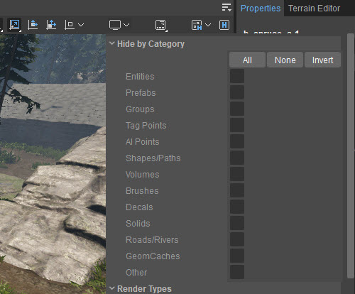
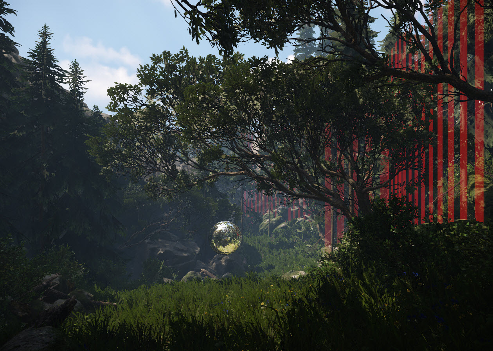
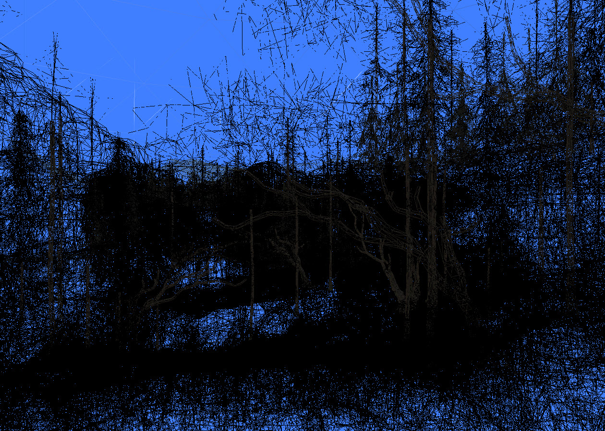

Обзор
Перспективный видовой экран — единственный настраиваемый видовой экран. На этой странице мы обсудим настройки дисплея.

Скрыть по категории
Все параметры под этим заголовком позволяют скрывать и отображать определенные объекты в окне просмотра.
Типы рендеринга
Как и в случае со «Скрыть по категории», параметры под этим заголовком позволяют скрывать и отображать определенные типы рендеринга в видовом экране.
Параметры отображения
| Настройка | Описание |
|---|---|
| Режим рендеринга | Твердый визуализирует сцену в сплошном режиме, который является режимом по умолчанию:  Каркас рендерит сцену в каркасном режиме:  |
| Безопасная рамка | Отображает рамку целевого соотношения сторон, чтобы показать, что видно в игровом режиме: |
Параметры профиля
| Настройка | Описание |
|---|---|
| Профилировщик кадров | Эта опция отображает имена функций, которые в данный момент вызываются игровым движком.
Чем больше времени занимает процесс, тем он дороже. Очевидно, что при отладке рекомендуется в первую очередь обратить внимание на эти процессы. Однако также полезно принять во внимание процессы с относительно небольшим временем, но большим количеством счетчиков, поскольку это также может вызвать проблемы.
|
| Информация о памяти | Отображает текущую информацию о памяти. Полезно для поиска утечек памяти. |
| Отладка рендеринга | Рендеринг ресурсов отображает различную статистику об использовании DirectX. Вызовы рисования для каждого объекта показывает количество вызовов отрисовки, необходимых для рисования объекта. Бюджеты рендеринга показывает информацию о времени CPU/GPU и памяти, потраченной на кадр |
Стерео настройки
| Настройка | Описание |
|---|---|
| Стерео режим | Включить/отключить режим двойного рендеринга в Sandbox |
| Стерео выход | Выберите из списка тип 3D-изображения, который вы хотите визуализировать. например: Рядом, анаглиф, гарнитура VR и т. д. |
| Расстояние до глаз (м) | Расстояние между глазами, используемое для стерео (межглазное расстояние) |
| Расстояние до экрана (м) | Расстояние до плоскости, где стереопараллакс сходится к нулю |
| Перевернуть глаза | Если информация для каждого глаза поступает в неправильном порядке, вы можете перевернуть их. |